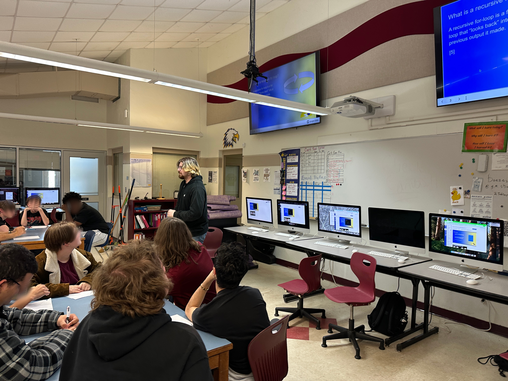

April 1. 2026
Teaching Fun!
Observer: Aiden
Thomas
Teacher: Eric Baez
Reflections on Classroom Observation
This week at Loften High School, I introduced students to recursion through the Fibonacci sequence, beginning with a paper-based tracing exercise where students worked through the recursive problem with an added challenge of adding 2 to the final output. The transition from paper to code revealed interesting patterns in student understanding. Of the 17 students who completed the paper assignment, 8 successfully solved the problem, 3 achieved a partial solution, and 6 struggled to find a solution. When students moved to the programming phase with 16 online submissions, I was encouraged to see improvement. 10 students successfully solved the implementation, 1 partially solved it, and 5 did not solve it. This represented a jump from 47% success rate on paper to 63% success rate in code, suggesting that some students grasp recursive concepts more effectively when they can test and iterate their solutions digitally. However, I noticed that 11 out of 16 students completed the Fibonacci task overall, indicating that some students who began the assignment did not follow through to completion.
Data AnalysisBelow is me, teaching the fibonnacci sequence

A concerning discovery emerged when analyzing code similarity patterns. The data revealed significant overlap between several student submissions and online sources, with some pairs showing similarity percentages ranging from 40% to 96% . Most notably, Student 1 and Student 3 showed 96% and 93% similarity respectively to online resources . While 8 students appeared to develop their solutions independently using what I categorized as the "ABC" method, 2 students employed novel approaches, and 2 used unknown methods . This raised important questions about academic integrity and whether students truly understood the recursive concepts or simply found and adapted online solutions.
Moving forward, I intend to implement more scaffolded checkpoints during the coding process and consider requiring students to explain their code verbally or through comments to ensure genuine understanding. I also recognize the need to discuss academic honesty more explicitly with students and help them understand the difference between using online resources as learning tools versus simply copying solutions.
Comfortability: 8/10 I selected this rating because while I felt confident in my ability to explain recursion conceptually, I was surprised by the code similarity patterns and realized I need better strategies for detecting and preventing copying while still encouraging students to use online resources appropriately for learning.